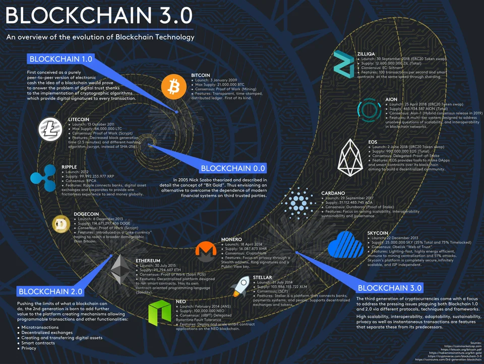

A look at the current state of blockchain
Blockchain isn’t exactly a new technology anymore, considering it is over a decade old. However, aside from the financially speculative hype surrounding Bitcoin, blockchain seems to be still trying to establish itself as a mainstream revolution.
When PwC surveyed executives in 2018, 84% indicated that they were actively involved with blockchain. Their more recent Time to Trust report predicts that by 2030, blockchain could create 40 million jobs and add $1.76T to the global economy.Given the potential that continues to be touted for blockchain, we decided to ask the experts what the current impact of blockchain has been and how far it still has to go in its journey to revolutionize the internet.
Where Are We at With Blockchain
Blockchain is a decentralized and distributed ledger that is used for recording transactions and tracking digital assets. It is a shared and immutable ledger meaning that once a transaction is recorded on the blockchain, it can’t be altered. This seemingly tamper-proof technology saw blockchain heralded as the next big thing in emerging technology only a few years ago. Still, to date, the impact has not been seen across every industry. According to Statista, 33% of global organizations say that their companies are working on creating a digital currency using the technology. Another popular use case includes payments, which explains why the industry that seems to be the most impacted by blockchain is the finance industry.Pete Zimmerman, North American Software Sales Manager at NY-based, ERP software company VAI, points out that this is the most notable contribution thus far, but the blockchain is definitely more than a buzzword as other industries are currently being impacted as well.
“Cryptocurrencies, such as Bitcoin, are perhaps the best-known examples of blockchain technology in action. However, pretty much every industry has benefited from blockchain, from financial transactions and contracts to supply chain information and healthcare,” says Zimmerman. Zimmerman explains that pharmaceutical companies can use blockchain technology to improve supply chains and track things such as vaccine distributions or tracing units of food. Information such as this could be valuable for both vendors and consumers.
Loudon Owen, CEO at Toronto, Ontario-based enterprise blockchain development company DLT Labs, says that the technology wasn’t able to have the proposed impact yet because “blockchain created a huge ‘pause’ in decision-making as organizations generally appreciate its transformational capability, but were unclear about next steps.” This left many organizations testing out proof of concepts and watching the industry, which is why there haven’t been colossal mainstream use cases to date.
On the Brink of a Blockchain Revolution?
We’re not quite in a blockchain revolution yet since, according to Owen, the technology is still in its infancy. “The technology is at an inflection point, and the future of blockchain in the enterprise is really in a select number of key individuals and organizations’ hands,” Owen adds.Given the current capabilities of the technology, Owen believes that mainstream adoption within the enterprise could be roughly 18-36 months away, but there won’t be a total revolution until governments recognize what can be done with it.

Arnas Vasiliauskas, Chief Innovation and Product Officer at Estonia-based carVertical also believes that blockchain’s explosion is approaching. He states that “right now, blockchain is on the verge of being a widely-used technology. It is not there yet, because lots of people still have limited knowledge about it. However, it is expected to take off in the coming years as more people will recognize the unique ability of this technology.”
Government adoption seems to be the main thing standing in the way of blockchain technology. Still, it does appear as if steps are being taken in several countries towards incorporating blockchain. In order to keep up with the digital asset movement that was sparked by cryptocurrencies, and as a means of addressing the need for regulations, central banks have been trying to incorporate blockchain. Central banks around the world including the Central Bank of England, Bank of Canada and banks in Singapore and Thailand have been experimenting with pilot programs to determine the viability of a central bank digital currency (CBDC). These CBDC’s would be blockchain-based tokens representing a digital form of the fiat-based currency of each country. However, as they are still pilot programs and no CBDC has officially been launched yet, the question of current use cases is still there.
Blockchain Is on the Way, But Adoption Is Slow
Given that blockchain technology first emerged ten years ago, Gartner’s recent finding that the business impact of blockchain will be transformational in five to ten years is surprising. Blockchain, especially over the past 12 months, has become a business buzzword and everyone is looking for the best way to apply it.However, according to the 2019 Gartner Hype Cycle for Blockchain it will be five to ten years before the technology becomes transformational in most industries.The Hype Cycle provides an overview of how blockchain capabilities are evolving from a business perspective and maturity across different industries. Based on the findings of the Gartner 2019 CIO Agenda Survey (registration required), the hype cycle shows three industries that Gartner believes will move to adoption.
Five Year Enterprise Roll-Out
Jimmy Nguyen, the president of the Bitcoin Association, told CMSWire that the five-to-ten year assessment is an accurate one though he believes that some practical blockchain technologies could take-off in the next two-to-three years.Bitcoin and blockchain technology should be much farther along now, he told CMSWire. However, bitcoin and the entire industry were artificially crippled for too many years because Bitcoin would not raise its tiny 1MB block cap. That prevented bitcoin from growing earlier to support global adoption for payment transactions and for enterprise blockchain applications. The artificial 1MB limit on Bitcoin also led other competing blockchain projects to emerge, and helped create today's world where we may have far too many competing blockchain, distributed ledger and cryptocurrency projects.
He pointed out that Bitcoin always had the capacity to be the one global data ledger and to power all the other advanced functions people want from blockchain — smart contracts, tokens, decentralized apps, and much more. Had BTC scaled to bigger blocks much earlier on its life, blockchain technology would be much farther along than it is now.
The result is that enterprises are still struggling to find a blockchain that fits their needs, especially from a scaling perspective. Ethereum's struggles to scale demonstrate that, with Vitalik Buterin, the creator of Ethereum recently acknowledging that the Ethereum blockchain is almost full and a fact that is inhibiting on-boarded of new businesses onto its network.
The entire blockchain industry has years of catching up to do, he added. CIOs of big businesses need a blockchain that has significant data and transaction capacity, and provides a stable protocol so they can reliably build their projects on it. These are the reasons why Bitcoin SV (BSV) emerged. BSV is now powering a massively scaled blockchain — with 2000 MB block cap now and an unlimited block cap next February 2020 — to provide data capacity to be the public blockchain needed to support enterprise applications.
“On BSV, we are already seeing an explosion of exciting new applications being built, so expect to see enterprise use of the BSV blockchain in the next few years,” he said.
Blockchain Development
Blockchain growth has moved way past the era of hype and bitcoin bubble. So far, 2019 has allowed for projects to focus on blockchain development with many creative and innovative techs springing up in the blockchain ecosystem, Awosika Israel Ayodeji, enterprise solutions lead at Caymans-based Hydro Labs said.Enterprise blockchain is gradually gaining attention with the likes of IBM, Consensys and Hydro Labs offering blockchain solutions to companies globally. Considering that many still see blockchain as new tech and so many are still learning to separate blockchain from cryptocurrency, it could take a while for blockchain to be fully adopted in the enterprise circle. “Companies do not want to be the first to explore the new tech and those already exploring are still in testing phase to ensure that the tech sync well with their systems and operations,” he said.
He pointed to a forecast by Deep Analysis that put enterprise blockchain full adoption at 2024, making the five year timeline for blockchain mainstream adoption by Gartner valid
More Problems
1. Incorporating Blockchain
Incorporating blockchain technology into businesses and industries is a significant investment, requiring substantial time, money and effort. In addition to the still significant amount of institutional resistance, he said, “there are operational and technical challenges that have inhibited mainstream adoption of blockchain technology.2. Standardized Middleware
For developers to create usable distributed applications, there needs to be a viable blockchain protocol to support “smart business contracts.” Such a protocol must include not only a virtual machine, but also a middleware software stack outside of the blockchain. (Today this is handled by so-called “DApps in a non-standard way.) While running the blockchain ledger, every node in the blockchain can support standardized middleware.3. Reusable Software
As with successful enterprise software, the key is not to create an all-powerful virtual machine or programming language, but to build an extensive library of reusable software components — and then standardize the whole stack. Take the Linux operating system, for example. It was widely adopted by enterprise users only after the community had extended the core operating system with thousands of business-friendly software packages (and after Fedora/Red Hat came along to standardize the stack). The strengths of enterprise platforms lie in their standardized libraries and frameworks.Cosmos, the network that was designed to improve blockchain interoperability, released its live software earlier this year. “Is that the breakthrough? It’s too soon to say, but crucial in a high-performance environment, where computing power and network latency are typically not a concern, is the design for reliability and interoperability in enterprise applications. It’s why blockchain already is moving from just another IT function to a true ecosystem builder — not if, but when,” he said.
Companies Using Blockchain Today
Global enterprise companies including IBM, Walmart and Shell currently have tangible use cases for blockchain technology and continue to research and develop new applications. The IBM blockchain is presently being used to provide transparency and data integrity within healthcare systems. Exploration is also being done to provide a network that makes it easier to manage and exchange skills-based credentials.“Shell is working with blockchain technology and finance partners to create a platform for the trade and settlement of crude oil. Also, Walmart uses blockchain to deploy a food traceability system,” Zimmerman shares.
Owen explains how Walmart Canada continues to innovate using the technology with the creation of “a system used to eliminate the challenge of duelling information systems that cause huge invoice disputes among shippers and carriers.” This approach enables the company to avoid reconciling invoices through matching. “The blockchain solution now has all the information synchronized on a single, distributed and shared ledger,” adds Owen.
Blockchain technology hasn’t quite hit revolutionary appeal yet, but it seems to be poised to impact several areas over the next few years.